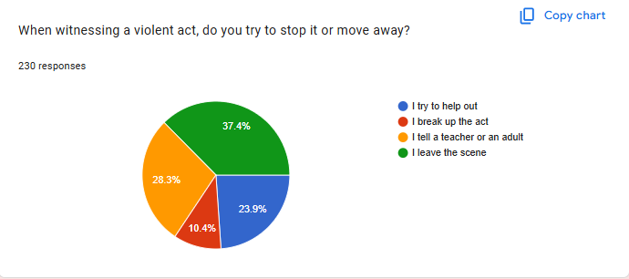
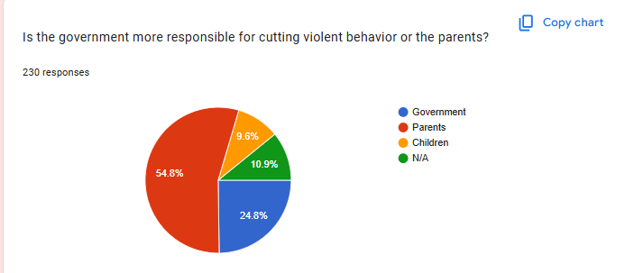
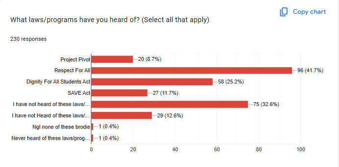

Field Research
We conducted a field research by creating a survey with questions related to people's understanding and views on violence in the schools. In order to get the best results, we picked people who were of high school age or older, who we thought were in school, just graduated or had some sort of prior knowledge. Our sample focused on parents, students, and teachers because they are the biggest part of schools and most affected by the violence.
Data Analysis
The majority of respondents, 37.4%, tend to avoid violent acts and not help in any way.
More than half of the respondents claim that the parents are the most responsible in the issue of violence in NYC schools.
12.6% of people have never heard of some of these laws which were created by the government and others to be able to maintain violence in schools. While a good portion of other respondents have seen or heard of these programs, there is still a need to spread awareness and find more success.